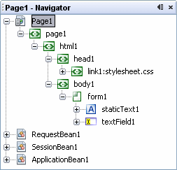

Open this window by choosing Window > Navigating > Navigator from the main menu. The following figure shows a Navigator window with several components that have been added to the current page, Page1. Below the page are the standard managed beans to which you can add properties to store and manage information.
